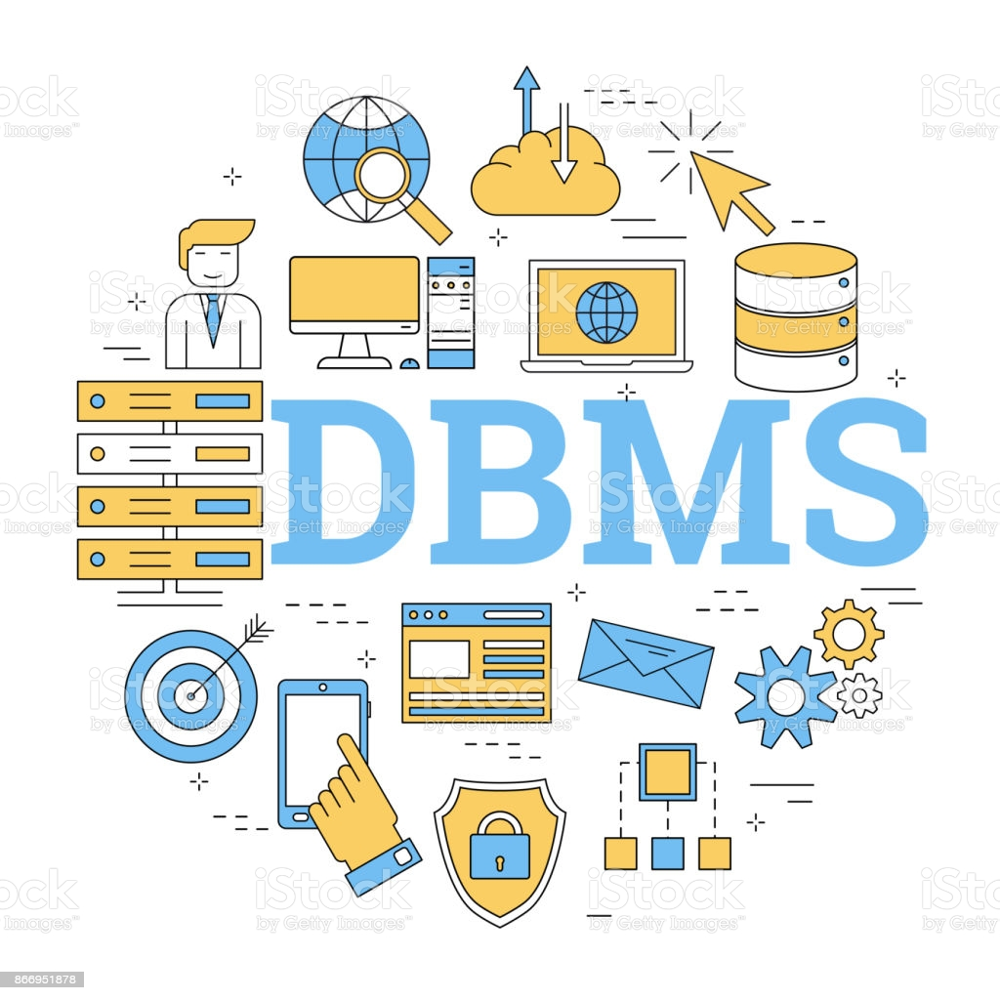

Introduction aux systèmes de gestion de bases de données
Un peu d’histoire
Base de données et Système de Gestion de Base de Donnée [Data Base Management System]
- évolution des entreprises (volumes importants de données, centralisées ou réparties, qui doivent être accessibles en temps utile,...)
- évolution technologique (accroissement des performances, intégration des composants, diminution des coûts, ...)
- évolution des systèmes d’exploitation (SE) et des architectures : extension logicielle du matériel initial, les SE réalisent une machine virtuelle très puissante qui définit un environnement pour des langages de haut niveau ; architectures client serveur et réseaux, combinant de façon transparente des machines et des applications hétérogènes.
Les Systèmes de Gestion de Bases de Données (SGBD) ont vu le jour dans les années 60 pour gérer d’importants volumes de données de gestion. Il s’agissait de systèmes propriétaires (appartenant à une marque d’ordinateur, par exemple IBM [International Buisinesss Machine Big Blue]), sur grands systèmes [main frame] conçus selon un schéma d’organisation «hiérarchique» ou «réseau».
En 1970, Codd, chercheur chez IBM , proposa le modèle relationnel. Ce modèle conceptuel constitue un progrès important car il repose sur une représentation unifiée de l’information sous forme de tables. Il dispose d’un fondement mathématique solide avec l’algèbre relationnelle (opérations ensemblistes). Il permet une plus grande indépendance entre les applications, les données et le support physique [hardware et software]. Il propose une démarche cohérente et unifiée pour la description (Langage de Description des Données - LDD) et pour l’interrogation (Langage de Manipulation des Données - LMD). Enfin le modèle relationnel supporte le langage SQL [Sequel : Standard English Query Language] aussi bien comme LDD que LMD, basé lui-aussi sur l’algèbre relationnelle.
De nombreux SGBD sont aujourd’hui disponibles sur micro ordinateurs. La plupart sont dotés de capacités relationnelles, bien que l’ancêtre des SGBD sur micro, DBase (Borland) ne soit qu’un gestionnaire de fichiers structurés avec un langage de programmation. On peut citer FoxPro (clone de DBase) et Access (Microsoft) et Paradox (Borland). Sur stations de travail et mini ordinateurs sous Unix, trois ou quatre SGBD relationnels dominent : Oracle, Ingres, Informix, Sybase. DB2 (IBM) est un SGBD relationnel sur main frame.
Les SGBD, qui sont la raison d'être de l’informatique de gestion, ont vu leur domaine d’utilisation s’élargir considérablement. Bases de Connaissances, Systèmes Experts, Systèmes d’Information Géographique, Edition de Documents Informatisés (EDI), Systèmes d’Information Documentaire (SID), Conception Assistée par Ordinateur (CAO), Gestion de Production Assistée par Ordinateur (GPAO) sont des domaines où une information structurée est enregistrée et gérée par un SGBD générique (relationnel) et traitée selon des besoins spécifiques, l’interface et les outils de traitement dépendant plus particulièrement de l’application.
Une base de données est un ensemble structuré de données enregistrées avec le minimum de redondance pour satisfaire simultanément plusieurs utilisateurs de façon sélective en un temps opportun. L’approche base de données correspond à une triple évolution :
Un système organisé autour d’une base de données est centré sur les données, contrairement aux systèmes de gestion plus anciens (et dépassés) basés sur les fonctions et les traitements (par exemple : chaîne de traitement de la paye, chaîne de la facturation, gestion des stocks, etc.)
Cependant les modes informatiques changent et même l’approche base de données est remise en question. On voit émerger un nouveau modèle, dit modèle objet, qui est lui centré sur les structures. Nous n’aborderons pas cette approche dans ce cours.
Dans l’approche gestion de fichiers, les fichiers sont définis pour un ou plusieurs programmes de traitement. Les données d’un fichier sont directement associées à un programme par une description contenue dans le programme de traitement lui-même. Il n’existe aucune indépendance entre le programme et les données. Toute modification de la structure des données nécessite la réécriture du programme.
Dans l’approche base de données, la partie de structuration et de description des données est unifiée et séparée des programmes d’application. Bien sûr la gestion de ces données (stockage, modification, recherche) qui est étroitement dépendante de leur structuration, est fournie par le Système de gestion des données, les applications ne communiquant avec les données qu’au travers de l’interface de gestion. D’où l’indépendance entre les données et les applications, qui peuvent être modifiées indépendamment. Le programmeur des applications (et a fortiori l’utilisateur) n’a pas à connaître l’organisation physique des données...

Défintion et rôle
Un système de gestion de base de données (abr. SGBD) est un logiciel système servant à stocker, à manipuler ou gérer, et à partager des données dans une base de données, en garantissant la qualité, la pérennité et la confidentialité des informations, tout en cachant la complexité des opérations.
Un SGBD(en anglais DBMS pour database management system)permet d'inscrire, de retrouver, de modifier, de trier, de transformer ou d'imprimer les informations de la base de données. Il permet d'effectuer des comptes rendus des informations enregistrées et comporte des mécanismes pour assurer la cohérence des informations, éviter des pertes d'informations dues à des pannes, assurer la confidentialité et permettre son utilisation par d'autres logiciels. Selon le modèle, le SGBD peut comporter une simple interface graphique jusqu'à des langages de programmation sophistiqués.
Les systèmes de gestion de base de données sont des logiciels universels, indépendants de l'usage qui est fait des bases de données. Ils sont utilisés pour de nombreuses applications informatiques, notamment les guichets automatiques bancaires, les logiciels de réservation, les bibliothèques numériques, les logiciels d'inventaire, les progiciels de gestion intégrés ou la plupart des blogs et sites web. Il existe de nombreux systèmes de gestion de base de données. En 2008, Oracle détenait près de la moitié du marché des SGBD avec MySQL et Oracle Database. Vient ensuite IBM avec près de 20 %, laissant peu de place pour les autres acteurs.Les SGBD sont souvent utilisés par d'autres logiciels ainsi que les administrateurs ou les développeurs. Ils peuvent être sous forme de composant logiciel, de serveur, de logiciel applicatif ou d'environnement de programmation. En 2011, la majorité des SGBD du marché manipulent des bases de données relationnelles.
But visé
Les SGBD sont les logiciels intermédiaires entre les utilisateurs et les bases de données. Une base de données est un magasin de données composé de plusieurs fichiers manipulés exclusivement par le SGBD. Ce dernier cache la complexité de manipulation des structures de la base de données en mettant à disposition une vue synthétique du contenu.
L'ensemble SGBD et base de données est destiné à permettre le stockage de données d'une manière offrant de nombreux avantages par rapport à un enregistrement conventionnel dans des fichiers. Il permet d'obtenir et de modifier rapidement des données, de les partager entre plusieurs usagers. Il garantit l'absence de redondance, l'intégrité, la confidentialité et la pérennité des données tout en donnant des moyens d'éviter les éventuels conflits de modification et en cachant les détails du format de fichier des bases de données.
Les données sont enregistrées sous forme de suites de bits représentant des lettres, des nombres, des couleurs, des formes, ... Le SGBD comporte différents mécanismes destinés à retrouver rapidement les données et de les convertir en vue d'obtenir des informations qui aient un sens.
à l'aide du SGBD plusieurs usagers et plusieurs logiciels peuvent accéder simultanément aux données. Le SGBD effectue les vérifications pour assurer qu'aucune personne non autorisée n'ait accès à des données confidentielles contenues dans la base de données, il arbitre les collisions lorsqu'il y a plusieurs modifications simultanées de la même information et comporte des mécanismes en vue d'éviter des pertes de données à la suite d'une panne ; la redondance désigne une situation de présence de plusieurs copies de la même donnée dont la modification peut amener à des incohérences se manifestant par des copies différentes. Le SGBD vérifie - voire refuse - la présence de redondances. Le SGBD effectue également sur demande des vérifications pour assurer que les données introduites soient correctes (valeurs dans les limites admises, format correct) et que les données soient cohérentes par rapport à ce qui se trouve déjà dans la base de données ; les données sont typiquement manipulées par un logiciel applicatif qui fait appel aux services du SGBD pour manipuler la base de données. Alors qu'un logiciel applicatif qui manipule un fichier tient compte du format de données de ce fichier, un logiciel qui manipule une base de données par l'intermédiaire d'un SGBD n'a pas connaissance du format de la base de données, les données sont présentées par le SGBD sous une forme qui cache les détails du format des fichiers dans lesquels elles sont enregistrées. Les SGBD contemporains sont des logiciels sophistiqués nécessitant du personnel hautement qualifié, et leur utilisation entraîne souvent une augmentation substantielle des coûts liés aux licences et à la formation.